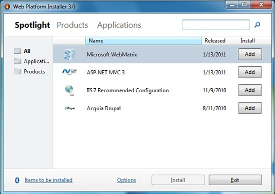

From http://www.w3schools.com (Copyright Refsnes Data)
Create your first Razor web site using WebMatrix.
WebMatrix is a free web development tool from Microsoft.
WebMatrix provides the easiest way to build ASP.NET websites.
WebMatrix contains:
With WebMatrix you can start from scratch with an empty web site and a blank page, or build on open source applications from a "Web Application Gallery". Both PHP and ASP.NET applications are available, such as Umbraco, DotNetNuke, Drupal, Joomla, WordPress and many more. WebMatrix also has built-in tools for security, search engine optimization, and web publishing.
The skills and code you develop with WebMatrix can seamlessly be transformed to fully professional Visual Studio and SQL Server applications.
Download Microsoft’s Web Platform Installer to install WebMatrix:
http://www.microsoft.com/web/downloads/platform.aspx
Run the installer, and install WebMatrix with 3 clicks:
Select Spotlight, click WebMatrix, and click Install:

Microsoft Web Platform Installer (Web PI) is a tool to install free components of the Microsoft Web Platform, including Internet Information Services (IIS), SQL Server Express, .NET Framework and Visual Web Developer.
The Web PI also makes it easy to install popular free web applications for blogging, content management and more with a built-in Windows Web Application Gallery
From http://www.w3schools.com (Copyright Refsnes Data)